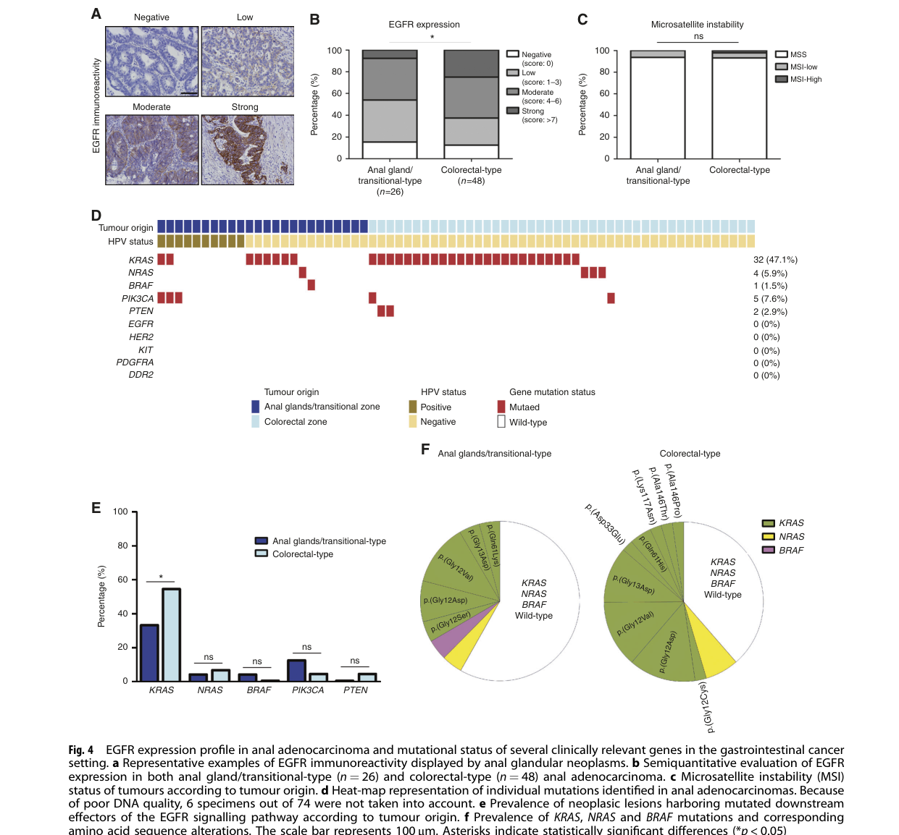

Anal canal adenocarcinoma is a rare, aggressive gland-forming malignancy of the anal canal region. It is biologically heterogeneous: some tumors resemble colorectal-type adenocarcinoma, some arise from anal gland or transitional epithelium, and fistula-associated mucinous tumors can emerge in chronic anorectal inflammatory tracts. The evidence base is dominated by population registry cohorts, retrospective treatment studies, molecular cohort profiling, and case reports rather than randomized disease-specific trials.
Ask a research question about Anal Canal Adenocarcinoma. OpenScientist will conduct autonomous deep research using the Disorder Mechanisms Knowledge Base and PubMed literature (typically 10-30 minutes).
Do not include personal health information in your question. Questions and results are cached in your browser's local storage.

name: Anal Canal Adenocarcinoma
creation_date: "2026-05-14T18:23:55Z"
updated_date: "2026-05-14T18:23:55Z"
synonyms:
- Anal adenocarcinoma
- Adenocarcinoma of the anal canal
- Adenocarcinoma arising in anal mucosa
- Fistula-associated mucinous adenocarcinoma
description: >-
Anal canal adenocarcinoma is a rare, aggressive gland-forming malignancy of
the anal canal region. It is biologically heterogeneous: some tumors resemble
colorectal-type adenocarcinoma, some arise from anal gland or transitional
epithelium, and fistula-associated mucinous tumors can emerge in chronic
anorectal inflammatory tracts. The evidence base is dominated by population
registry cohorts, retrospective treatment studies, molecular cohort profiling,
and case reports rather than randomized disease-specific trials.
categories:
- Gastrointestinal Malignancy
- Adenocarcinoma
- Solid Tumor
- Rare Cancer
parents:
- anus adenocarcinoma
- anal canal carcinoma
- adenocarcinoma
disease_term:
preferred_term: anal canal adenocarcinoma
term:
id: MONDO:0002735
label: anal canal adenocarcinoma
definitions:
- name: Clinicopathologic definition
definition_type: CASE_DEFINITION
description: >-
A primary adenocarcinoma arising in the anal canal mucosa, transitional
zone, anal glands, or anorectal fistula region, diagnosed by biopsy and
gland-forming histopathology with clinical and immunohistochemical exclusion
of a downward-extending distal rectal adenocarcinoma or metastatic
adenocarcinoma from another primary site.
scope: Gastrointestinal oncology and surgical pathology definition
evidence:
- reference: PMID:29700411
reference_title: "A dualistic model of primary anal canal adenocarcinoma with distinct cellular origins, etiologies, inflammatory microenvironments and mutational signatures: implications for personalised medicine."
supports: SUPPORT
evidence_source: HUMAN_CLINICAL
snippet: "Primary adenocarcinoma of the anal canal is a rare and aggressive gastrointestinal disease with unclear pathogenesis."
explanation: >-
This multi-institutional cohort establishes anal canal adenocarcinoma as a
rare aggressive gastrointestinal tumor and motivates subtype-aware
pathologic classification.
- reference: PMID:34244243
reference_title: "Anal adenocarcinoma: case report, literature review and comparative survival analysis."
supports: SUPPORT
evidence_source: HUMAN_CLINICAL
snippet: "A recent classification suggests that anal adenocarcinomas can be subdivided into two types: (1) colorectal from mucosa above the dentate line and (2) extramucosal from anorectal fistulae or anal glands."
explanation: >-
This review supports classifying anal adenocarcinoma by colorectal-type
mucosal origin versus extramucosal fistula or anal-gland origin.
has_subtypes:
- name: Anal Gland/Transitional Type
display_name: Anal gland/transitional-type anal canal adenocarcinoma
classification: histologic and molecular
description: >-
KRT7-positive, KRT20/CDX2-negative tumors interpreted as anal
gland/transitional-type adenocarcinomas. In the Herfs cohort, this subtype
had a subset of HPV16/18-associated tumors and a more prominent
immune-checkpoint microenvironment than colorectal-type tumors.
evidence:
- reference: PMID:29700411
reference_title: "A dualistic model of primary anal canal adenocarcinoma with distinct cellular origins, etiologies, inflammatory microenvironments and mutational signatures: implications for personalised medicine."
supports: SUPPORT
evidence_source: HUMAN_CLINICAL
snippet: "Phenotypic analysis revealed two region-specific subtypes of anal canal adenocarcinoma."
explanation: >-
The 74-tumor molecular pathology cohort supports distinct
region-specific subtypes within primary anal canal adenocarcinoma.
- name: Colorectal Type
display_name: Colorectal-type anal canal adenocarcinoma
classification: histologic and molecular
description: >-
KRT20/CDX2-positive tumors interpreted as colorectal-type anal canal
adenocarcinomas, resembling lower rectal or colorectal mucosal
adenocarcinoma in lineage marker pattern and clinical management.
evidence:
- reference: PMID:34244243
reference_title: "Anal adenocarcinoma: case report, literature review and comparative survival analysis."
supports: SUPPORT
evidence_source: HUMAN_CLINICAL
snippet: "Differentiating between distal rectal adenocarcinoma with local spread and primary anal canal tumours is challenging."
explanation: >-
This review highlights the diagnostic boundary between colorectal-type
anal canal adenocarcinoma and distal rectal adenocarcinoma extending into
the anal canal.
- name: Fistula-Associated Mucinous Type
display_name: Fistula-associated mucinous adenocarcinoma
classification: etiologic and histologic
description: >-
Mucinous adenocarcinoma arising in a chronic anorectal fistula or perianal
abscess/fistula tract, including Crohn disease-associated fistula cancers.
evidence:
- reference: PMID:37695405
reference_title: "A case report of anal fistula-associated mucinous adenocarcinoma developing 3 years after treatment of perianal abscess."
supports: SUPPORT
evidence_source: HUMAN_CLINICAL
snippet: "A biopsy taken from the tumor demonstrated mucinous adenocarcinoma; the tumor was diagnosed as FAMC."
explanation: >-
This case report directly documents fistula-associated mucinous
adenocarcinoma as an anal canal adenocarcinoma-related subtype.
environmental:
- name: Chronic anorectal fistula and perianal abscess history
description: >-
Persistent anorectal fistula or perianal abscess/fistula inflammation can
provide the substrate for fistula-associated mucinous adenocarcinoma.
effect: HARMFUL
evidence:
- reference: PMID:37695405
reference_title: "A case report of anal fistula-associated mucinous adenocarcinoma developing 3 years after treatment of perianal abscess."
supports: SUPPORT
evidence_source: HUMAN_CLINICAL
snippet: "A long-standing (over 10 years) anal fistula is considered a fundamental cause of fistula-associated mucinous adenocarcinoma (FAMC)."
explanation: >-
The abstract identifies long-standing anal fistula as a fundamental cause
of fistula-associated mucinous adenocarcinoma.
- name: Crohn disease-associated anorectal fistula
description: >-
Perianal Crohn disease with anorectal fistula can be complicated by
mucinous anorectal fistula cancer with locally advanced invasion.
effect: HARMFUL
evidence:
- reference: PMID:37962718
reference_title: "Resection of anorectal fistula cancer associated with Crohn's disease after preoperative chemoradiotherapy: a case report."
supports: SUPPORT
evidence_source: HUMAN_CLINICAL
snippet: "We report a case of anorectal fistula cancer with widespread infiltration diagnosed during the course of Crohn's disease, which was curatively resected after preoperative chemoradiotherapy."
explanation: >-
This case report supports Crohn disease-associated anorectal fistula as a
context for locally advanced mucinous adenocarcinoma.
pathophysiology:
- name: Chronic fistula-associated mucinous carcinogenesis
description: >-
Recurrent perianal abscess and anal fistula generate a chronic
inflammatory epithelial tract. Dysplasia within the fistula lining can
progress to poorly differentiated mucinous adenocarcinoma involving the
dermis, epidermis, sphincter complex, or adjacent pelvic organs.
cell_types:
- preferred_term: fistula tract glandular epithelial cell
term:
id: CL:0000066
label: epithelial cell
locations:
- preferred_term: anal canal
term:
id: UBERON:0000159
label: anal canal
biological_processes:
- preferred_term: chronic inflammation-driven cell population proliferation
term:
id: GO:0008283
label: cell population proliferation
modifier: INCREASED
evidence:
- reference: PMID:37695405
reference_title: "A case report of anal fistula-associated mucinous adenocarcinoma developing 3 years after treatment of perianal abscess."
supports: SUPPORT
evidence_source: HUMAN_CLINICAL
snippet: "Histopathology showed highly dysplastic cells lining the lumen of the anal fistula and poorly differentiated mucinous adenocarcinoma proliferating in the dermis and epidermis in the distal aspect of the fistula."
explanation: >-
The histopathology links dysplastic fistula lining to proliferating
mucinous adenocarcinoma in the distal fistula tract.
downstream:
- target: Locally advanced pelvic invasion
description: Fistula-associated mucinous tumors may infiltrate adjacent pelvic structures.
- name: Dualistic HPV-dependent and HPV-independent tumor lineages
description: >-
Primary anal canal adenocarcinoma separates into at least two
region-specific entities. Anal gland/transitional-type tumors can follow an
HPV-dependent pathway with increased immune checkpoint expression, whereas
colorectal-type tumors more often follow HPV-independent colorectal-lineage
molecular programs.
cell_types:
- preferred_term: glandular epithelial cell of anal canal
term:
id: CL:0000066
label: epithelial cell
biological_processes:
- preferred_term: immune response
term:
id: GO:0006955
label: immune response
modifier: DYSREGULATED
- preferred_term: cell surface receptor protein tyrosine kinase signaling pathway
term:
id: GO:0007169
label: cell surface receptor protein tyrosine kinase signaling pathway
modifier: DYSREGULATED
evidence:
- reference: PMID:29700411
reference_title: "A dualistic model of primary anal canal adenocarcinoma with distinct cellular origins, etiologies, inflammatory microenvironments and mutational signatures: implications for personalised medicine."
supports: SUPPORT
evidence_source: HUMAN_CLINICAL
snippet: "The significant differences in the HPV status, density of tumour-infiltrating lymphocytes, expression of immune checkpoints and mutational profile of several targetable genes further supported the separation of these latter neoplasms into two distinct entities."
explanation: >-
The molecular cohort supports two mechanistically distinct entities
separated by HPV status, immune contexture, checkpoint expression, and
targetable mutation profile.
images:
- Anal_Canal_Adenocarcinoma-deep-research-falcon_artifacts/image-1.png
downstream:
- target: PD-1/PD-L1-enriched immune microenvironment
description: The anal gland/transitional subtype shows greater immune checkpoint expression.
- target: KRAS/NRAS and PI3K pathway alteration
description: Targetable gastrointestinal cancer genes vary across subtypes.
- name: PD-1/PD-L1-enriched immune microenvironment
description: >-
The anal gland/transitional-type subset has higher PD-1/PD-L1 expression
and a different tumor-infiltrating lymphocyte profile than colorectal-type
tumors, creating a biologic rationale for immune-checkpoint-directed
clinical research while not establishing prospective efficacy for this rare
tumor.
cell_types:
- preferred_term: CD8-positive, alpha-beta T cell
term:
id: CL:0000625
label: CD8-positive, alpha-beta T cell
- preferred_term: regulatory T cell
term:
id: CL:0000815
label: regulatory T cell
biological_processes:
- preferred_term: immune response
term:
id: GO:0006955
label: immune response
modifier: DYSREGULATED
evidence:
- reference: PMID:29700411
reference_title: "A dualistic model of primary anal canal adenocarcinoma with distinct cellular origins, etiologies, inflammatory microenvironments and mutational signatures: implications for personalised medicine."
supports: SUPPORT
evidence_source: HUMAN_CLINICAL
snippet: "anal gland/transitional-type cancers, which poorly respond to standard treatments, displayed less mutations in downstream effectors of the EGFR signalling pathway (i.e., KRAS and NRAS) and demonstrated a significantly higher expression of the immune inhibitory ligand-receptor pair PD-1/PD-L1 compared to their counterparts arising from the colorectal mucosa."
explanation: >-
This supports an immune-checkpoint-enriched microenvironment in the anal
gland/transitional subtype relative to colorectal-type tumors.
phenotypes:
- name: Anal pain with palpable tumor
category: Gastrointestinal
description: >-
Anal or perianal pain with a palpable tumor can be a presenting feature,
especially in fistula-associated mucinous adenocarcinoma.
phenotype_term:
preferred_term: anal pain
term:
id: HP:0500005
label: Anal pain
evidence:
- reference: PMID:37695405
reference_title: "A case report of anal fistula-associated mucinous adenocarcinoma developing 3 years after treatment of perianal abscess."
supports: SUPPORT
evidence_source: HUMAN_CLINICAL
snippet: "A 68-year-old woman was admitted to our hospital because of progressive anal pain and a palpable tumor."
explanation: >-
Case-level evidence directly reports progressive anal pain and palpable
tumor as presenting manifestations.
- name: Rectal bleeding or serosanguineous anal discharge
category: Gastrointestinal
description: >-
Bleeding or serosanguineous drainage may prompt anorectal examination even
when prior colorectal screening was normal.
phenotype_term:
preferred_term: rectal bleeding
term:
id: HP:0002573
label: Hematochezia
evidence:
- reference: PMID:34244243
reference_title: "Anal adenocarcinoma: case report, literature review and comparative survival analysis."
supports: SUPPORT
evidence_source: HUMAN_CLINICAL
snippet: "This case highlights the challenges of early diagnosis of anal malignancies and the importance of prompt evaluation of anorectal area by anoscopy and colonoscopy if symptoms of rectal bleeding or serosanguinous anal discharge are reported."
explanation: >-
The review highlights rectal bleeding and serosanguineous discharge as
symptoms that should trigger prompt anal and rectal evaluation.
- name: Anal stenosis from pelvic mass
category: Gastrointestinal
description: >-
Locally advanced anorectal fistula cancer can present with anal stenosis
caused by a pelvic mass and may be associated with abdominal pain and
diarrhea in Crohn disease.
phenotype_term:
preferred_term: Anal stenosis
term:
id: HP:0002025
label: Anal stenosis
evidence:
- reference: PMID:37962718
reference_title: "Resection of anorectal fistula cancer associated with Crohn's disease after preoperative chemoradiotherapy: a case report."
supports: SUPPORT
evidence_source: HUMAN_CLINICAL
snippet: "Computed tomography (CT) showed anal stenosis due to a pelvic mass."
explanation: >-
This Crohn-associated anorectal fistula cancer case documents anal
stenosis secondary to a pelvic mass.
histopathology:
- name: Primary anal canal adenocarcinoma
finding_term:
preferred_term: Anal Canal Adenocarcinoma
term:
id: NCIT:C7471
label: Anal Canal Adenocarcinoma
description: >-
Primary anal canal adenocarcinoma is a glandular malignancy that requires
histologic and immunophenotypic distinction from squamous carcinoma and
from distal rectal adenocarcinoma extending into the anal canal.
evidence:
- reference: PMID:29700411
reference_title: "A dualistic model of primary anal canal adenocarcinoma with distinct cellular origins, etiologies, inflammatory microenvironments and mutational signatures: implications for personalised medicine."
supports: SUPPORT
evidence_source: HUMAN_CLINICAL
snippet: "The present article aimed at addressing this information gap by in-depth characterising the anal glandular neoplasms at the histologic, immunologic, genomic and epidemiologic levels."
explanation: >-
The Herfs cohort explicitly characterizes primary anal glandular neoplasms
at the histologic level as part of subtype definition.
- name: Mucinous fistula-associated adenocarcinoma
description: >-
Fistula-associated tumors can show mucinous adenocarcinoma with dysplastic
fistula epithelium and dermal or epidermal extension at the distal fistula
tract.
evidence:
- reference: PMID:37695405
reference_title: "A case report of anal fistula-associated mucinous adenocarcinoma developing 3 years after treatment of perianal abscess."
supports: SUPPORT
evidence_source: HUMAN_CLINICAL
snippet: "Histopathology showed highly dysplastic cells lining the lumen of the anal fistula and poorly differentiated mucinous adenocarcinoma proliferating in the dermis and epidermis in the distal aspect of the fistula."
explanation: >-
The case report provides direct histopathologic evidence for mucinous
fistula-associated adenocarcinoma arising along the fistula tract.
- name: CK7-positive and CK20/CDX2-negative immunophenotype
description: >-
CK7-positive, CK20/CDX2-negative staining supports anal gland/transitional
lineage in some tumors and helps distinguish primary anal adenocarcinoma
from colorectal-type adenocarcinoma.
evidence:
- reference: PMID:34244243
reference_title: "Anal adenocarcinoma: case report, literature review and comparative survival analysis."
supports: SUPPORT
evidence_source: HUMAN_CLINICAL
snippet: "Immunohistological stains were positive for CK7 and negative for CK20, CDX2, SOX-10 consistent with adenocarcinoma."
explanation: >-
The case report documents an immunophenotypic pattern used to support an
anal adenocarcinoma diagnosis.
genetic:
- name: KRAS and NRAS pathway mutation context
association: Somatic RAS pathway alterations and subtype-specific mutation burden
variant_origin: SOMATIC
gene_term:
preferred_term: KRAS
term:
id: hgnc:6407
label: KRAS
notes: >-
Herfs et al. profiled clinically relevant gastrointestinal cancer genes and
found subtype-specific differences in downstream EGFR signaling effectors,
including KRAS and NRAS.
evidence:
- reference: PMID:29700411
reference_title: "A dualistic model of primary anal canal adenocarcinoma with distinct cellular origins, etiologies, inflammatory microenvironments and mutational signatures: implications for personalised medicine."
supports: SUPPORT
evidence_source: HUMAN_CLINICAL
snippet: "anal gland/transitional-type cancers, which poorly respond to standard treatments, displayed less mutations in downstream effectors of the EGFR signalling pathway (i.e., KRAS and NRAS)"
explanation: >-
The abstract identifies KRAS and NRAS as subtype-relevant downstream EGFR
signaling effectors in primary anal canal adenocarcinoma.
- name: MSI-high biomarker in individual case
association: Rare mismatch-repair-deficient or MSI-high biomarker context
variant_origin: SOMATIC
notes: >-
MSI-high status appears uncommon in the Herfs cohort but was reported in a
BMJ Open Gastroenterology case treated with pembrolizumab.
evidence:
- reference: PMID:34244243
reference_title: "Anal adenocarcinoma: case report, literature review and comparative survival analysis."
supports: SUPPORT
evidence_source: HUMAN_CLINICAL
snippet: "Subsequent tumour profiling demonstrated a high microsatellite instability and was KRAS/NRAS/BRAF wild type."
explanation: >-
This case report supports MSI-high as a clinically relevant biomarker in
at least a subset of anal adenocarcinoma patients.
epidemiology:
- name: United States SEER incidence and demographics
description: >-
In SEER data from 1973-2015, anal canal adenocarcinoma was uncommon,
diagnosed at mean age 68.12 years, and showed a modest male predominance.
unit: population registry cases
evidence:
- reference: PMID:32455011
reference_title: "Clinicopathologic Features and Outcome of Adenocarcinoma of the Anal Canal: A Population-Based Study."
supports: SUPPORT
evidence_source: HUMAN_CLINICAL
snippet: "The mean age for diagnosis of AA was 68.12 ± 14.02 years. Males outnumbered females by 54.8 to 45.2%."
explanation: >-
The SEER-based population study gives age and sex distribution for anal
canal adenocarcinoma in the United States.
- name: Anal adenocarcinoma proportion among anal cancers
description: >-
Anal adenocarcinoma represents a minority of anal cancers, substantially
less common than anal squamous cell carcinoma.
unit: percent of anal cancer
evidence:
- reference: PMID:32389595
reference_title: "Survival Outcomes After Initial Treatment for Anal Adenocarcinoma: A Population-Based Cohort Study."
supports: SUPPORT
evidence_source: HUMAN_CLINICAL
snippet: "Anal adenocarcinoma (AA) is reported to represent 5% to 10% of all anal cancer."
explanation: >-
The treatment-outcomes cohort frames AA as a rare minority histology among
anal cancers.
stages:
- name: SEER stage distribution at diagnosis
description: >-
SEER data show that localized disease is the most common presentation, with
substantial regional and distant disease at diagnosis.
evidence:
- reference: PMID:32455011
reference_title: "Clinicopathologic Features and Outcome of Adenocarcinoma of the Anal Canal: A Population-Based Study."
supports: SUPPORT
evidence_source: HUMAN_CLINICAL
snippet: "Tumors were mostly localized on presentation (44.4%) and moderately differentiated (41.1%)."
explanation: >-
This supports localized disease as the most common SEER presentation and
provides tumor grade context.
diagnosis:
- name: Biopsy with histopathology and immunohistochemistry
description: >-
Diagnosis requires tissue confirmation of adenocarcinoma and careful
pathologic distinction from distal rectal adenocarcinoma, including CK7,
CK20, CDX2, and other immunohistochemical markers when clinically needed.
diagnosis_term:
preferred_term: Biopsy Procedure
term:
id: NCIT:C15189
label: Biopsy Procedure
results: Invasive anal canal adenocarcinoma histology and subtype classification.
evidence:
- reference: PMID:34244243
reference_title: "Anal adenocarcinoma: case report, literature review and comparative survival analysis."
supports: SUPPORT
evidence_source: HUMAN_CLINICAL
snippet: "Immunohistological stains were positive for CK7 and negative for CK20, CDX2, SOX-10 consistent with adenocarcinoma."
explanation: >-
The case report illustrates immunohistochemical workup used to support
anal adenocarcinoma diagnosis.
- reference: PMID:29700411
reference_title: "A dualistic model of primary anal canal adenocarcinoma with distinct cellular origins, etiologies, inflammatory microenvironments and mutational signatures: implications for personalised medicine."
supports: SUPPORT
evidence_source: HUMAN_CLINICAL
snippet: "The present article aimed at addressing this information gap by in-depth characterising the anal glandular neoplasms at the histologic, immunologic, genomic and epidemiologic levels."
explanation: >-
Herfs et al. support integrated histologic, immunologic, genomic, and
epidemiologic characterization of anal glandular neoplasms.
- name: Staging imaging for local and metastatic disease
description: >-
Cross-sectional imaging and PET can identify pelvic lymphadenopathy, local
rectal/anal extension, and distant lesions during staging.
diagnosis_term:
preferred_term: Imaging Procedure
term:
id: NCIT:C17369
label: Imaging Procedure
results: Local extent, nodal involvement, and distant metastasis assessment.
evidence:
- reference: PMID:34244243
reference_title: "Anal adenocarcinoma: case report, literature review and comparative survival analysis."
supports: SUPPORT
evidence_source: HUMAN_CLINICAL
snippet: "PET scan revealed hypermetabolic uptake at the rectum extending to the anal verge, gluteal fold, posterior scrotal sac, lymphadenopathy in the abdomen and pelvis from the iliac chain to external femoral nodes, and a hepatic lesion suspicious for metastatic disease."
explanation: >-
This case demonstrates PET-based staging of local extension, nodal
disease, and suspected distant metastasis.
treatments:
- name: Surgery for localized or resectable disease
description: >-
Surgical resection is a major component of treatment for resectable anal
canal adenocarcinoma and is associated with improved survival in SEER
analyses.
treatment_term:
preferred_term: surgical procedure
term:
id: MAXO:0000004
label: surgical procedure
evidence:
- reference: PMID:32455011
reference_title: "Clinicopathologic Features and Outcome of Adenocarcinoma of the Anal Canal: A Population-Based Study."
supports: SUPPORT
evidence_source: HUMAN_CLINICAL
snippet: "Surgical intervention improved survival significantly as compared to patients who did not (116.7 months vs 42.7 months, p < 0.01)."
explanation: >-
Population-based SEER analysis supports a survival association with
surgery for anal canal adenocarcinoma.
- name: Preoperative chemoradiation with surgical resection
description: >-
For stage I-III anal adenocarcinoma, retrospective SEER data suggest that
preoperative radiation or chemotherapy followed by surgery may maximize
survival, especially for more advanced localized disease.
treatment_term:
preferred_term: Chemoradiotherapy
term:
id: NCIT:C94626
label: Chemoradiotherapy
evidence:
- reference: PMID:32389595
reference_title: "Survival Outcomes After Initial Treatment for Anal Adenocarcinoma: A Population-Based Cohort Study."
supports: SUPPORT
evidence_source: HUMAN_CLINICAL
snippet: "Preoperative treatment with surgical resection may maximize the survival outcome."
explanation: >-
The SEER stage I-III treatment study concludes that preoperative
treatment with surgery may maximize survival.
- reference: PMID:32389595
reference_title: "Survival Outcomes After Initial Treatment for Anal Adenocarcinoma: A Population-Based Cohort Study."
supports: SUPPORT
evidence_source: HUMAN_CLINICAL
snippet: "Although chemoradiotherapy alone may be sufficient for early stages of disease, patients with advanced disease should be treated with a combination of surgical resection and chemoradiotherapy."
explanation: >-
This supports combined surgery and chemoradiotherapy for advanced
non-metastatic disease, while acknowledging possible sufficiency of
chemoradiotherapy alone in early stages.
- name: Pembrolizumab for MSI-high disease
description: >-
Pembrolizumab is a biomarker-driven treatment consideration for MSI-high
anal adenocarcinoma, but the direct disease-specific evidence is limited to
case-level observation in the retrieved literature.
treatment_term:
preferred_term: pharmacotherapy
term:
id: MAXO:0000058
label: pharmacotherapy
therapeutic_agent:
- preferred_term: pembrolizumab
term:
id: NCIT:C106432
label: Pembrolizumab
evidence:
- reference: PMID:34244243
reference_title: "Anal adenocarcinoma: case report, literature review and comparative survival analysis."
supports: PARTIAL
evidence_source: HUMAN_CLINICAL
snippet: "Over a year after diagnosis, the patient is alive and managed with pembrolizumab."
explanation: >-
This single MSI-high case provides partial, case-level support for
pembrolizumab in biomarker-selected anal adenocarcinoma.
clinical_trials:
- name: NCT05605873
phase: NOT_APPLICABLE
status: COMPLETED
description: >-
Retrospective French cohort study designed to classify clinical,
histologic, etiologic, and prognostic forms of adenocarcinoma of the anus.
evidence:
- reference: clinicaltrials:NCT05605873
supports: SUPPORT
snippet: "Adenocarcinoma of the anus is rare. It concerns less than 10% of anal cancers and its incidence is less than 0.2/100 000 inhabitants."
explanation: >-
The ClinicalTrials.gov summary supports rarity and the rationale for
studying clinical, histologic, and prognostic forms.
progression:
- phase: Poor overall prognosis
notes: >-
Anal adenocarcinoma has worse survival than rectal adenocarcinoma and anal
squamous cell carcinoma in comparative SEER analysis.
evidence:
- reference: PMID:34244243
reference_title: "Anal adenocarcinoma: case report, literature review and comparative survival analysis."
supports: SUPPORT
evidence_source: HUMAN_CLINICAL
snippet: "Survival analysis showed that anal adenocarcinoma is associated with worse outcomes compared with rectal adenocarcinoma and anal squamous cell carcinoma."
explanation: >-
Comparative SEER survival analysis supports worse outcomes for anal
adenocarcinoma than the two major comparator malignancies.
- phase: Stage- and surgery-associated survival differences
notes: >-
Survival is better for localized and well-differentiated tumors and is
improved among surgically treated patients in a SEER population-based study.
evidence:
- reference: PMID:32455011
reference_title: "Clinicopathologic Features and Outcome of Adenocarcinoma of the Anal Canal: A Population-Based Study."
supports: SUPPORT
evidence_source: HUMAN_CLINICAL
snippet: "Patients with localized disease and well-differentiated tumors showed better survival outcomes."
explanation: >-
This population-based analysis supports stage and differentiation as
clinically relevant prognostic factors.
- phase: Bimodal poor survival pattern
notes: >-
SEER analysis reported poor cancer-free survival in younger and older
patient groups, reinforcing that this rare histology has clinically
important prognosis across age strata.
evidence:
- reference: PMID:32455011
reference_title: "Clinicopathologic Features and Outcome of Adenocarcinoma of the Anal Canal: A Population-Based Study."
supports: SUPPORT
evidence_source: HUMAN_CLINICAL
snippet: "Anal canal adenocarcinoma demonstrated a poor bimodal cancer-free survival in both younger and older patient groups."
explanation: >-
The SEER cohort conclusion supports a poor bimodal cancer-free survival
pattern in both younger and older patients.
Anal canal adenocarcinoma is a rare malignant epithelial tumor with gland-forming histology arising in the anal canal region and/or adjacent transitional zone, with heterogeneous biology and clinical behavior. Registry-based studies emphasize its rarity and historically limited evidence base for guidelines. (gogna2020clinicopathologicfeaturesand pages 1-2, park2020survivaloutcomesafter pages 1-2)
SEER-based studies identify anal canal adenocarcinoma using ICD-O-3 site codes for the anal canal region—C21.0 (anus, NOS), C21.1 (anal canal), C21.2 (cloacogenic zone)—and exclude “overlapping lesion of rectum, anus and anal canal” (C21.8) to avoid misclassification with rectal primaries. (gogna2020clinicopathologicfeaturesand pages 2-3)
Most available evidence is aggregated (SEER population registry) and case-based/observational literature due to rarity; prospective randomized data are minimal. (gogna2020clinicopathologicfeaturesand pages 1-2, park2020survivaloutcomesafter pages 1-2, NCT05605873 chunk 1)
Anal canal adenocarcinoma is etiologically heterogeneous and can arise through distinct pathways depending on subtype.
Chronic inflammation and fistula-associated carcinogenesis (mucinous subtype) - A 2023 fistula-associated mucinous adenocarcinoma case report states: “Chronic inflammation in organs is one of the causes of cancer development and proliferation.” (Koizumi et al., Surgical Case Reports, published 2023-09; https://doi.org/10.1186/s40792-023-01743-3). (koizumi2023acasereport pages 1-3) - The same report emphasizes that “A long-standing (over 10 years) anal fistula is considered an etiology of fistula-associated mucinous adenocarcinoma (FAMC)” and notes that malignant transformation may occur faster than expected: “FAMC can develop within fewer than 3 years after the development of a perianal abscess and anal fistula.” (koizumi2023acasereport pages 1-3)
Crohn’s disease and anorectal fistula cancer context A 2023 Crohn’s disease-associated case report highlights diagnostic difficulty and late presentation in anorectal fistula cancers, commonly mucinous histology, and reports that symptom changes (mucus discharge, bleeding, stricture) often trigger diagnosis. (Inoue et al., Surgical Case Reports, published 2023-11; https://doi.org/10.1186/s40792-023-01778-6). (inoue2023resectionofanorectal pages 1-3)
Evidence for HPV differs by subtype: - A 2021 literature review/case report states that, unlike anal squamous cell carcinoma, “no such association with anal adenocarcinoma has been established” for HPV. (Tsay et al., BMJ Open Gastroenterology, 2021-07; https://doi.org/10.1136/bmjgast-2021-000661). (tsay2021analadenocarcinomacase pages 2-3) - In contrast, molecular profiling of primary anal canal adenocarcinoma supports HPV-dependent and HPV-independent pathways and reports HPV16/18 restricted to an anal gland/transitional-type subset (see Molecular section). (herfs2018adualisticmodel pages 1-2, herfs2018adualisticmodel pages 8-9)
No protective factors or gene–environment interaction evidence specific to anal canal adenocarcinoma were retrievable in the current corpus.
Case reports and fistula-associated cancer reports describe symptomatic presentation including: - Anal pain and palpable perianal/anal mass (koizumi2023acasereport pages 1-3) - Mucus discharge, anal bleeding, and stricturing/stenosis in fistula-cancer contexts (inoue2023resectionofanorectal pages 1-3) - Perianal nodules/papules and chronic anal drainage in an anal adenocarcinoma case report (tsay2021analadenocarcinomacase pages 1-1)
In a SEER population analysis (1973–2015), anal canal adenocarcinoma presented as: - In situ 6.7%, localized 44.4%, regional 25.8%, distant 13.5% (gogna2020clinicopathologicfeaturesand pages 1-2) This distribution supports a substantial proportion diagnosed beyond localized disease, consistent with diagnostic delay in fistula-associated forms. (inoue2023resectionofanorectal pages 1-3)
Beyond SEER stage distributions, robust phenotype frequency estimates (e.g., percent with bleeding/pain) were not available in retrieved texts.
Crohn’s-related perianal disease and fistulizing disease is described as disabling with significant quality-of-life impairment in contemporary reviews of perianal IBD, but disease-specific QoL quantification for anal adenocarcinoma itself was not retrievable. (inoue2023resectionofanorectal pages 1-3)
A multi-institutional cohort study (n=74 primary anal canal adenocarcinomas) supports a dualistic model with two region-specific entities: - Anal gland/transitional-type: 26/74 (35.1%), characterized by diffuse Krt7 expression and absence of Krt20/CDX2 (herfs2018adualisticmodel pages 4-5) - Colorectal-type: 48/74 (64.9%), characterized by Krt20/CDX2 positivity and not Krt7 (herfs2018adualisticmodel pages 4-5)
Mismatch repair deficiency/MSI-high appears rare in this tumor type: 1/74 (1.4%) MSI-high reported in the dualistic cohort. (herfs2018adualisticmodel pages 8-9)
Anal gland/transitional-type tumors show greater immune infiltration and higher checkpoint expression; the study highlights higher PD-1/PD-L1 expression and T-cell infiltration relative to colorectal-type tumors. Visual summary of immune-marker differences (PD-L1 tumor cell scoring; PD-1+ immune infiltration) is provided in the retrieved figures. (herfs2018adualisticmodel pages 9-10, herfs2018adualisticmodel media 4416b428)
In the 74-case dualistic cohort: - EGFR protein detected by IHC in 64/74 (86.5%) tumors (herfs2018adualisticmodel pages 7-8) - Somatic mutation frequencies included KRAS 47.1%, NRAS 5.9%, PIK3CA 7.6%, PTEN 2.9%, BRAF 1.5%; EGFR, HER2, KIT, PDGFRA, DDR2 mutations were absent in this dataset (herfs2018adualisticmodel pages 7-8) - The subtype comparison and mutation landscape are summarized visually in retrieved figures (heatmap and prevalence plots). (herfs2018adualisticmodel media 502e33fe)
A 2021 case report described MSI-high status and KRAS/NRAS/BRAF wild type tumor profiling in an individual patient. (tsay2021analadenocarcinomacase pages 1-2)
Direct environmental toxin/radiation/lifestyle risk factor quantification specific to anal canal adenocarcinoma was not retrievable in the current corpus. The most consistently described non-genetic drivers relate to chronic inflammation (fistula, IBD) rather than classic environmental exposures. (koizumi2023acasereport pages 1-3, inoue2023resectionofanorectal pages 1-3)
Pathway A: Chronic fistula/inflammation → mucinous adenocarcinoma Perianal abscess and fistula represent chronic infectious/inflammatory processes; persistent inflammation and epithelial dysplasia within fistula tracts can progress to mucinous adenocarcinoma, often recognized only after symptom change or mass formation. (koizumi2023acasereport pages 1-3, inoue2023resectionofanorectal pages 1-3)
Pathway B: Dualistic anal canal adenocarcinoma model (HPV-dependent vs independent) Primary anal canal adenocarcinoma comprises at least two lineages with distinct etiologies and immune/mutational features. Anal gland/transitional tumors can be HPV16/18-associated and show increased PD-1/PD-L1 and T-cell infiltration, while colorectal-type tumors more closely resemble colorectal mucosal cancers and show different mutation patterns. (herfs2018adualisticmodel pages 1-2, herfs2018adualisticmodel pages 8-9)
Advanced fistula-associated tumors may infiltrate adjacent pelvic structures (e.g., prostate/levator ani/internal obturator described in Crohn’s-associated fistula cancer report). (inoue2023resectionofanorectal pages 1-3)
Mean age at diagnosis in a SEER analysis was 68.12 ± 14.02 years. (gogna2020clinicopathologicfeaturesand pages 1-2)
A SEER population-based study (1973–2015; n=2,090) reports: - Estimated prevalence 0.0011% (gogna2020clinicopathologicfeaturesand pages 1-2) - Incidence trend: +4.03%/year (1973–1985) followed by −0.32%/year (1986–2015) (gogna2020clinicopathologicfeaturesand pages 2-3) - Sex distribution: 54.8% male, 45.2% female (gogna2020clinicopathologicfeaturesand pages 1-2)
No Mendelian inheritance pattern is established; this is primarily a sporadic malignancy with somatic alterations and inflammatory/viral etiologies in subsets. (herfs2018adualisticmodel pages 1-2, herfs2018adualisticmodel pages 7-8)
Diagnosis typically relies on anorectal exam, endoscopic evaluation, and biopsy with histopathology and immunohistochemistry to distinguish anal gland/transitional vs colorectal-type tumors.
Histopathology / IHC (subtype assignment) - The dualistic model uses keratin/CDX2 patterns: Krt7 (anal gland/transitional) vs Krt20/CDX2 (colorectal-type). (herfs2018adualisticmodel pages 4-5)
Imaging Case reports use cross-sectional imaging and/or PET for staging and metastatic evaluation. (tsay2021analadenocarcinomacase pages 1-1)
Molecular testing Somatic profiling may include KRAS/NRAS/BRAF testing and MSI/MMR assessment (MSI-high is rare but clinically actionable for immunotherapy in many GI cancers). (tsay2021analadenocarcinomacase pages 1-2, herfs2018adualisticmodel pages 8-9)
A recurring challenge is distinguishing primary anal canal adenocarcinoma from distal rectal adenocarcinoma extending into the anal canal and from fistula-associated extramucosal lesions. (tsay2021analadenocarcinomacase pages 2-3)
In SEER (n=2,090), overall survival at: - 1 year 76.1%, 2 years 63.4%, 3 years 52.6%, 4 years 47.9%, 5 years 39.6% (gogna2020clinicopathologicfeaturesand pages 2-3) Prognosis varies strongly by stage and grade; metastatic disease showed markedly higher mortality (HR ~6). (gogna2020clinicopathologicfeaturesand pages 2-3)
Because of limited disease-specific guidelines, management often extrapolates from rectal adenocarcinoma paradigms and/or multimodality strategies.
Surgery In a SEER analysis, surgery was associated with longer survival (116.7 months vs 42.7 months, p<0.01). (gogna2020clinicopathologicfeaturesand pages 1-2)
Chemoradiation and combined modality In a SEER cohort of stage I–III patients (2010–2016; n=393), 3-year cause-specific survival differed by initial approach: - RT+CTx 63.9% - RT or CTx 35.7% - Surgery alone 77.7% - Preoperative RT/CTx + surgery 80.3% - Postoperative RT/CTx + surgery 65.8% (P<.001). (Park 2020; https://doi.org/10.1016/j.clcc.2020.04.001). (park2020survivaloutcomesafter pages 1-2) Preoperative RT/CTx plus surgery remained associated with improved cause-specific survival (multivariable P=0.024). (park2020survivaloutcomesafter pages 1-2)
Immunotherapy (evidence level: case-based; biomarker-driven) A 2021 case report described pembrolizumab use in an MSI-high anal adenocarcinoma patient with >1-year survival in follow-up narrative. (tsay2021analadenocarcinomacase pages 1-2) For anal adenocarcinoma overall, immune checkpoint relevance is biologically supported by elevated PD-1/PD-L1 in anal gland/transitional tumors, but prospective efficacy data are not established in the retrieved corpus. (herfs2018adualisticmodel pages 9-10, herfs2018adualisticmodel media 4416b428)
Evidence specific to adenocarcinoma prevention is limited in retrieved sources. - For fistula-associated cancers, case literature suggests heightened clinical suspicion and early biopsy when chronic fistula symptoms change or masses develop, as delayed diagnosis contributes to advanced presentation. (koizumi2023acasereport pages 1-3, inoue2023resectionofanorectal pages 1-3) - HPV vaccination and anal cancer screening guidelines are largely developed for anal squamous cell carcinoma risk contexts and cannot be directly assumed for adenocarcinoma, especially given mixed HPV evidence by subtype. (tsay2021analadenocarcinomacase pages 2-3, herfs2018adualisticmodel pages 8-9)
No directly analogous naturally occurring non-human disease models of anal canal adenocarcinoma were identified in the retrieved evidence. A canine condition, apocrine gland anal sac adenocarcinoma, is anatomically and biologically distinct (anal sac origin) and should not be treated as a direct model for human anal canal adenocarcinoma. (gogna2020clinicopathologicfeaturesand pages 1-2)
No validated, disease-specific model organism systems (mouse, zebrafish, organoid platforms uniquely representing anal canal adenocarcinoma subtypes) were retrieved from the current corpus.
The table below compiles the most actionable numeric findings for knowledge-base fields (epidemiology, stage distribution, survival, subtype proportions, HPV/MMR, and mutation frequencies).
| Domain | Key finding (with numbers) | Population/cohort | Study (first author year) | Publication date | URL/DOI | Evidence citation ID |
|---|---|---|---|---|---|---|
| Epidemiology | Estimated prevalence in SEER: 0.0011%; incidence increased 4.03%/year (1973-1985), then declined 0.32%/year (1986-2015) | 2,090 anal canal adenocarcinoma cases from SEER (1973-2015) | Gogna 2020 | 2020-05-13 | https://doi.org/10.1155/2020/5139236 | (gogna2020clinicopathologicfeaturesand pages 1-2, gogna2020clinicopathologicfeaturesand pages 2-3) |
| Epidemiology | Mean age at diagnosis 68.12 ± 14.02 years; 54.8% male; presentation: 44.4% localized, 25.8% regional, 13.5% distant, 6.7% in situ | 2,090 SEER cases | Gogna 2020 | 2020-05-13 | https://doi.org/10.1155/2020/5139236 | (gogna2020clinicopathologicfeaturesand pages 1-2, gogna2020clinicopathologicfeaturesand pages 2-3) |
| Survival | Overall survival rates at 1, 2, 3, 4, 5 years: 76.1%, 63.4%, 52.6%, 47.9%, 39.6% | 2,090 SEER cases | Gogna 2020 | 2020-05-13 | https://doi.org/10.1155/2020/5139236 | (gogna2020clinicopathologicfeaturesand pages 2-3) |
| Survival | Surgery associated with markedly longer survival: 116.7 months vs 42.7 months without surgery (p < 0.01) | 2,090 SEER cases | Gogna 2020 | 2020-05-13 | https://doi.org/10.1155/2020/5139236 | (gogna2020clinicopathologicfeaturesand pages 1-2) |
| Survival | Age >81 years associated with poorer outcome: mean survival 30.14 ± 1.84 months; HR 3.79 (95% CI 2.65-5.41) | 2,090 SEER cases | Gogna 2020 | 2020-05-13 | https://doi.org/10.1155/2020/5139236 | (gogna2020clinicopathologicfeaturesand pages 2-3) |
| Survival | Metastatic disease associated with ~6-fold higher mortality: HR 6.02 (95% CI 4.55-7.99) | 2,090 SEER cases | Gogna 2020 | 2020-05-13 | https://doi.org/10.1155/2020/5139236 | (gogna2020clinicopathologicfeaturesand pages 2-3) |
| Treatment | 3-year cause-specific survival by initial treatment: 63.9% (RT+CTx), 35.7% (RT or CTx), 77.7% (surgery alone), 80.3% (preop RT/CTx + surgery), 65.8% (postop RT/CTx + surgery); P < .001 | 393 stage I-III cases in SEER (2010-2016) | Park 2020 | 2020-09 | https://doi.org/10.1016/j.clcc.2020.04.001 | (park2020survivaloutcomesafter pages 1-2) |
| Treatment | Preoperative RT/CTx plus surgery associated with improved cause-specific survival on multivariable analysis (P = .024) | 393 stage I-III SEER cases | Park 2020 | 2020-09 | https://doi.org/10.1016/j.clcc.2020.04.001 | (park2020survivaloutcomesafter pages 1-2) |
| Molecular subtype | Two subtypes identified: anal gland/transitional-type 26/74 (35.1%) vs colorectal-type 48/74 (64.9%) | 74 primary anal canal adenocarcinomas | Herfs 2018 | 2018 | Not available in retrieved metadata | (herfs2018adualisticmodel pages 4-5) |
| HPV/MMR | HPV16/18 detected only in anal gland/transitional tumors: 11/26 (42.3%); p16 strong/diffuse staining in 12/26 (46.2%) Krt7-positive tumors | 74 tumors; subtype analysis within 26 gland/transitional tumors | Herfs 2018 | 2018 | Not available in retrieved metadata | (herfs2018adualisticmodel pages 8-9, herfs2018adualisticmodel pages 4-5) |
| HPV/MMR | Among HPV-infected tumors, 5/11 (45.5%) showed patches of p16 negativity; MSI-high/MMR-deficient phenotype observed in only 1/74 (1.4%) tumors | 74 tumors | Herfs 2018 | 2018 | Not available in retrieved metadata | (herfs2018adualisticmodel pages 9-10, herfs2018adualisticmodel pages 8-9) |
| Mutations | EGFR protein detected in 64/74 (86.5%) cancers | 74 tumors | Herfs 2018 | 2018 | Not available in retrieved metadata | (herfs2018adualisticmodel pages 9-10, herfs2018adualisticmodel pages 7-8) |
| Mutations | Mutation frequencies: KRAS 47.1%, NRAS 5.9%, PIK3CA 7.6%, PTEN 2.9%, BRAF 1.5%; EGFR, HER2, KIT, PDGFRA, DDR2 mutations absent | 74 tumors | Herfs 2018 | 2018 | Not available in retrieved metadata | (herfs2018adualisticmodel pages 7-8, herfs2018adualisticmodel media 502e33fe) |
| Immune microenvironment | Anal gland/transitional-type tumors showed higher PD-1/PD-L1 expression and more prominent T-cell infiltration than colorectal-type counterparts | 74 tumors | Herfs 2018 | 2018 | Not available in retrieved metadata | (herfs2018adualisticmodel pages 9-10, herfs2018adualisticmodel pages 1-2, herfs2018adualisticmodel media 4416b428) |
| Prognosis by subtype | In survival subset, 65/74 (87.8%) evaluable; 9/74 (12.2%) metastatic at diagnosis; recurrence 10/24 (41.7%) in anal gland/transitional vs 13/41 (31.7%) in colorectal-type; 5-year DFS 33.1% vs 52.6% and 5-year OS 27.8% vs 50.4% | 65 evaluable for OS/DFS within a 74-case cohort | Herfs 2018 | 2018 | Not available in retrieved metadata | (herfs2018adualisticmodel pages 7-8) |
| Comparative prognosis | Anal adenocarcinoma represented 5%-10% of anal canal malignancies and had worse prognosis than rectal adenocarcinoma and anal squamous carcinoma in comparative SEER analysis | SEER comparative cohort; anal adenocarcinoma subset noted as 1,660 in excerpted review | Tsay 2021 | 2021-07 | https://doi.org/10.1136/bmjgast-2021-000661 | (tsay2021analadenocarcinomacase pages 2-3, tsay2021analadenocarcinomacase pages 1-1) |
Table: This table compiles key numeric findings for anal canal adenocarcinoma across epidemiology, survival, molecular subtype, HPV/MMR status, mutations, and treatment outcomes. It is useful as a quick-reference evidence map for populating structured disease knowledge base fields.
Figures from the dualistic model cohort summarize mutation prevalence by subtype and PD-1/PD-L1/T-cell infiltration patterns. - Mutation/subtype overview: (herfs2018adualisticmodel media 502e33fe) - PD-L1 and immune infiltration overview: (herfs2018adualisticmodel media 4416b428)
References
(gogna2020clinicopathologicfeaturesand pages 2-3): Shekhar Gogna, Roberto Bergamaschi, Agon Kajmolli, Mahir Gachabayov, Aram Rojas, David Samson, Rifat Latifi, and Xiang Da Dong. Clinicopathologic features and outcome of adenocarcinoma of the anal canal: a population-based study. International Journal of Surgical Oncology, 2020:1-6, May 2020. URL: https://doi.org/10.1155/2020/5139236, doi:10.1155/2020/5139236. This article has 7 citations.
(gogna2020clinicopathologicfeaturesand pages 1-2): Shekhar Gogna, Roberto Bergamaschi, Agon Kajmolli, Mahir Gachabayov, Aram Rojas, David Samson, Rifat Latifi, and Xiang Da Dong. Clinicopathologic features and outcome of adenocarcinoma of the anal canal: a population-based study. International Journal of Surgical Oncology, 2020:1-6, May 2020. URL: https://doi.org/10.1155/2020/5139236, doi:10.1155/2020/5139236. This article has 7 citations.
(park2020survivaloutcomesafter pages 1-2): Hyojung Park. Survival outcomes after initial treatment for anal adenocarcinoma: a population-based cohort study. Clinical Colorectal Cancer, 19:e75-e82, Sep 2020. URL: https://doi.org/10.1016/j.clcc.2020.04.001, doi:10.1016/j.clcc.2020.04.001. This article has 6 citations and is from a peer-reviewed journal.
(tsay2021analadenocarcinomacase pages 2-3): Cynthia J Tsay, Thomas Pointer, Jocelyn B Chandler, Anil B Nagar, and Petr Protiva. Anal adenocarcinoma: case report, literature review and comparative survival analysis. BMJ Open Gastroenterology, 8:e000661, Jul 2021. URL: https://doi.org/10.1136/bmjgast-2021-000661, doi:10.1136/bmjgast-2021-000661. This article has 6 citations and is from a peer-reviewed journal.
(koizumi2023acasereport pages 1-3): Michihiro Koizumi, Akihisa Matsuda, Takeshi Yamada, Koji Morimoto, Itaru Kubota, Yawara Kubota, Shuzo Tamura, Kenta Tominaga, Takashi Sakatani, and Hiroshi Yoshida. A case report of anal fistula-associated mucinous adenocarcinoma developing 3 years after treatment of perianal abscess. Surgical Case Reports, Sep 2023. URL: https://doi.org/10.1186/s40792-023-01743-3, doi:10.1186/s40792-023-01743-3. This article has 15 citations.
(inoue2023resectionofanorectal pages 1-3): Takuya Inoue, Yuki Sekido, Takayuki Ogino, Tsuyoshi Hata, Norikatsu Miyoshi, Hidekazu Takahashi, Mamoru Uemura, Tsunekazu Mizushima, Yuichiro Doki, and Hidetoshi Eguchi. Resection of anorectal fistula cancer associated with crohn’s disease after preoperative chemoradiotherapy: a case report. Surgical Case Reports, Nov 2023. URL: https://doi.org/10.1186/s40792-023-01778-6, doi:10.1186/s40792-023-01778-6. This article has 10 citations.
(NCT05605873 chunk 1): Clinical, Histological and Prognostic Forms of Adenocarcinoma of the Anus. Fondation Hôpital Saint-Joseph. 2022. ClinicalTrials.gov Identifier: NCT05605873
(herfs2018adualisticmodel pages 1-2): M Herfs, P Roncarati, B Koopmansch, O Peulen, D Bruyere, A Lebeau, E Hendrick, and P Hubert. A dualistic model of primary anal canal adenocarcinoma with distinct cellular origins, etiologies, inflammatory microenvironments and mutational signatures …. Unknown journal, 2018.
(herfs2018adualisticmodel pages 8-9): M Herfs, P Roncarati, B Koopmansch, O Peulen, D Bruyere, A Lebeau, E Hendrick, and P Hubert. A dualistic model of primary anal canal adenocarcinoma with distinct cellular origins, etiologies, inflammatory microenvironments and mutational signatures …. Unknown journal, 2018.
(tsay2021analadenocarcinomacase pages 1-1): Cynthia J Tsay, Thomas Pointer, Jocelyn B Chandler, Anil B Nagar, and Petr Protiva. Anal adenocarcinoma: case report, literature review and comparative survival analysis. BMJ Open Gastroenterology, 8:e000661, Jul 2021. URL: https://doi.org/10.1136/bmjgast-2021-000661, doi:10.1136/bmjgast-2021-000661. This article has 6 citations and is from a peer-reviewed journal.
(herfs2018adualisticmodel pages 4-5): M Herfs, P Roncarati, B Koopmansch, O Peulen, D Bruyere, A Lebeau, E Hendrick, and P Hubert. A dualistic model of primary anal canal adenocarcinoma with distinct cellular origins, etiologies, inflammatory microenvironments and mutational signatures …. Unknown journal, 2018.
(herfs2018adualisticmodel pages 9-10): M Herfs, P Roncarati, B Koopmansch, O Peulen, D Bruyere, A Lebeau, E Hendrick, and P Hubert. A dualistic model of primary anal canal adenocarcinoma with distinct cellular origins, etiologies, inflammatory microenvironments and mutational signatures …. Unknown journal, 2018.
(herfs2018adualisticmodel media 4416b428): M Herfs, P Roncarati, B Koopmansch, O Peulen, D Bruyere, A Lebeau, E Hendrick, and P Hubert. A dualistic model of primary anal canal adenocarcinoma with distinct cellular origins, etiologies, inflammatory microenvironments and mutational signatures …. Unknown journal, 2018.
(herfs2018adualisticmodel pages 7-8): M Herfs, P Roncarati, B Koopmansch, O Peulen, D Bruyere, A Lebeau, E Hendrick, and P Hubert. A dualistic model of primary anal canal adenocarcinoma with distinct cellular origins, etiologies, inflammatory microenvironments and mutational signatures …. Unknown journal, 2018.
(herfs2018adualisticmodel media 502e33fe): M Herfs, P Roncarati, B Koopmansch, O Peulen, D Bruyere, A Lebeau, E Hendrick, and P Hubert. A dualistic model of primary anal canal adenocarcinoma with distinct cellular origins, etiologies, inflammatory microenvironments and mutational signatures …. Unknown journal, 2018.
(tsay2021analadenocarcinomacase pages 1-2): Cynthia J Tsay, Thomas Pointer, Jocelyn B Chandler, Anil B Nagar, and Petr Protiva. Anal adenocarcinoma: case report, literature review and comparative survival analysis. BMJ Open Gastroenterology, 8:e000661, Jul 2021. URL: https://doi.org/10.1136/bmjgast-2021-000661, doi:10.1136/bmjgast-2021-000661. This article has 6 citations and is from a peer-reviewed journal.